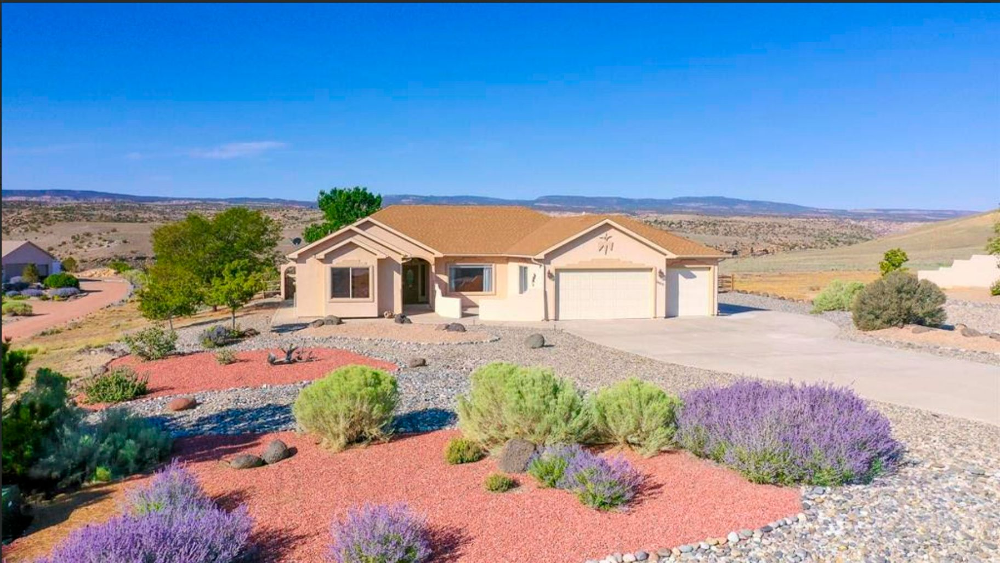

01

Mesa County · Colorado
The mesa south of the Colorado River, across from downtown Grand Junction. Most of it is unincorporated Mesa County, so the first question about any home here is whether it sits in the city or the county.
Living on Orchard Mesa
Orchard Mesa is the high ground south of the Colorado River and east of the Gunnison. It is a census-designated place, not a town, with no government of its own: Mesa County governs most of it, and a smaller share is inside the City of Grand Junction.
The 2020 Census counted 6,688 people in the Census area. The plan the City and the county share for Orchard Mesa reaches farther, about 20 square miles from Confluence Point east to the BLM land around 34 1/2 Road and south to Whitewater Hill, and it describes the mesa as urbanizing west of 31 Road.
9min
Downtown Grand Junction
20min
Grand Junction Regional Airport
23min
Palisade
Driving minutes from the Census center point of Orchard Mesa, which has no town hall, without traffic: OSRM estimates on OpenStreetMap data, October 2026.
Mesa County Fairgrounds
The county's grounds on Highway 50, with an equestrian center, grandstands and a BMX track, and the Mesa County Fair each July.
Old Spanish Trail, North Branch
A National Park Service staging area on the mesa, with horse trailer parking, for hiking, riding and mountain biking.
Tri-River CSU Extension
The area's CSU Extension office, on the fairgrounds.
Orchard Mesa canals
Reclamation finished the Grand Valley Project's Orchard Mesa Division in 1924, delivering Colorado River water to the mesa's canals.
Saved searches
Each card opens a live search of the Grand Junction Area REALTOR Association MLS listings, updated as they change.
01

02
Homes with a detached shop, a garage of three bays or more, or a pad for the RV.
View homes

03
Listings marked horse property in the MLS, on the mesa with the county's equestrian center.
View homes

04
The east end of the mesa, from 31 Road out to 34 1/2 Road, at an acre or more.
View homes
$549,000
2944 B 1/2 Road Grand Junction, CO 81503
4 beds · 3 baths · 2,480 sq ft
Listed by The Agency Grand Junction

$489,900
2817 Unaweep Avenue Grand Junction, CO 81503
3 beds · 2 baths · 1,960 sq ft
Listed by The Agency Grand Junction

$615,000
3168 B 1/4 Road Grand Junction, CO 81503
4 beds · 3 baths · 2,640 sq ft
Listed by The Agency Grand Junction

$439,000
2779 Sunrise Court Grand Junction, CO 81503
3 beds · 2 baths · 1,580 sq ft
Listed by The Agency Grand Junction

In 1881 George Crawford, who founded Grand Junction, looked out over the Grand Valley from a point on Orchard Mesa above today's Fifth Street Bridge. Below him the Grand River, now the Colorado, met the Gunnison, and he chose the townsite there, as Mesa County's 2002 Redlands plan records.
The mesa still faces downtown Grand Junction across that river, and it runs east from Confluence Point toward the BLM land around 34 1/2 Road.
Orchard Mesa has no town government. A 2014 City staff report counts about 3 square miles of the Orchard Mesa plan area, around 15 percent, inside the City of Grand Junction; the rest is unincorporated Mesa County. The City adopted the joint City and county plan in May 2014.
So two homes a few streets apart can answer to different governments. Before you write an offer, ask Dave to confirm which side of the line the address is on.
US Highway 50 crosses the mesa and carries on southeast through Whitewater toward Montrose. The neighborhood plan marks a neighborhood center at the highway's junction with 27 3/4 Road, and the Mesa County Fairgrounds sit on the highway between 27 3/4 Road and 28 1/2 Road.
The county's grounds at 2785 U.S. Highway 50 hold grandstands, an equestrian center, Little League fields, a BMX track, an arboretum and demonstration gardens. The Mesa County Fair is held there each July, and the Tri-River CSU Extension office is on the grounds.
The canals on Orchard Mesa belong to Reclamation's Grand Valley Project, which first delivered water in 1917. Its Orchard Mesa Division, finished in 1924, takes water from the Government Highline Canal across the Colorado River in a siphon and feeds Orchard Mesa Canals No. 1 and No. 2.
The U.S. Fish and Wildlife Service describes the Orchard Mesa Irrigation District as supplied with Colorado River water through the project. If a listing comes with irrigation water, ask Dave what the share includes before you count on it for a garden or a pasture.
The North Branch of the Old Spanish Trail ran from Santa Fe through the San Luis Valley and over Cochetopa Pass to Grand Junction. The National Park Service lists two staging areas for its trailhead here, one on Orchard Mesa and one at Whitewater.
The trailheads have parking, horse trailer parking and wayside exhibits, and the trail is open to hiking, horseback riding and mountain biking.
Day to day
School information is factual and by district. Always confirm a specific address in the district's school finder.
Dave's sales
Recent sales from his record in the MLS, with the price each home sold for.

Sold
$725,000
3045 B Road Grand Junction, CO 81503
4 beds · 4 baths · 3,350 sq ft
Sold by Dave Kimbrough

Sold
$512,000
2958 Pinyon Avenue Grand Junction, CO 81503
3 beds · 2 baths · 2,050 sq ft
Sold by Dave Kimbrough

Sold
$568,500
2835 Mesa Ridge Court Grand Junction, CO 81503
3 beds · 2 baths · 2,140 sq ft
Sold by Dave Kimbrough

Sold
$899,000
3290 B 1/2 Road Grand Junction, CO 81503
5 beds · 4 baths · 4,180 sq ft
Sold by Dave Kimbrough
Questions
Partly. Orchard Mesa is a census-designated place, not a town. About 15 percent of the Orchard Mesa plan area, roughly 3 square miles, is inside the City of Grand Junction, and the rest is unincorporated Mesa County. Confirm which applies to an address before you rely on city services.
Mesa County Valley School District 51. Lincoln Orchard Mesa Elementary School is inside the Census area and Orchard Mesa Middle School is on Unaweep Avenue. Schools are assigned by address, so confirm a specific home with the district's boundary information.
Grandstands, an equestrian center, Little League fields, a BMX track, an arboretum and demonstration gardens, at 2785 U.S. Highway 50. The Mesa County Fair is held there each July.
About 4 miles by road from the center of the Census area, roughly 9 minutes without traffic by OpenStreetMap routing. The airport is about 8 miles, or 20 minutes.
Nearby



Resources
Contact
Send Dave the address or the listing. He can confirm whether it sits in the city or the county, and what irrigation water, if any, comes with it.